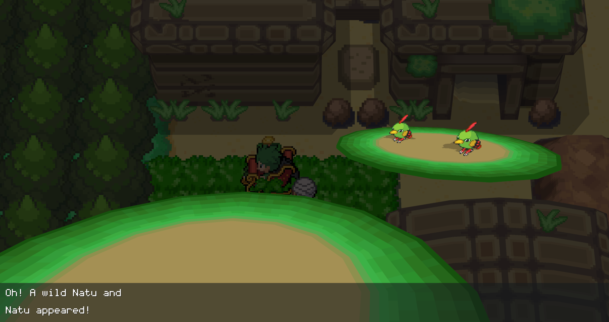

What is a shiny Pokemon?
Shiny pokemon are essentially a pallete swapped or recolored version of a regular pokemon, though they are a significantly more rare (a 1/30,000 chance on every wild pokemon you see). You can tell a pokemon is shiny by checking the top right corner of a pokemon's summary for a star. This is shown below.
A Regular Watchog
A Shiny Watchog
Types of Encounters/Shiny Hunts
Horde hunts are typically the faster shiny hunts, as you can encounter more pokemon at once, and thus, more per hour. To be exact, you can encounter just about 1,000 pokemon an hour doing a 5x horde, and about 600 or so doing a 3x horde. While doing single/double encounters usually maxes out at around 300 encounters an hour.
What these encounters look like is shown below.
Hordes
A Horde of 5 pokemon

A Horde of 3 pokemon
Others
An encounter with 2 Pokemon

An encounter with 1 Pokemon
Notes:
While shinies are a 1/30,000 chance to encounter one, there is no threshold that will give you a shiny. The game rolls what is essentially a 30,000 sided dice every time you encounter a wild pokemon. The image below demonstrates this idea, as it shows the confidence rating of different numbers of encounters. For example, if you do 30,000 encounters without donator status, 63% of players would have the shiny by then.
It is also worth noting that donator status can be purchase from the in-game shop using RP, or reward points (essentially this games form of paid currency, though it can be bought with in-game money as well). Donator status has several benefits, but most notably, it increases your shiny rate by 10%, effectively making it a 1/27,000 chance instead of a 1/30,000 chance.